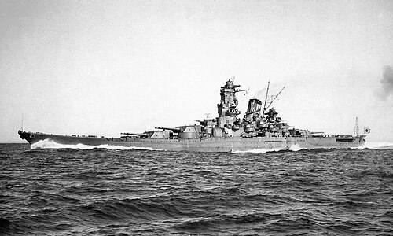

A Segunda Guerra Mundial (1939–1945) foi o maior e mais devastador conflito armado da história. Envolveu diversas nações dos cinco continentes, com destaque para os Aliados (como EUA, URSS e Reino Unido) e o Eixo (Alemanha, Itália e Japão). O conflito resultou em milhões de mortes, genocídios como o Holocausto, e transformações profundas no cenário geopolítico mundial.
A guerra teve origem em crises políticas, econômicas e sociais que se intensificaram após a Primeira Guerra Mundial. O Tratado de Versalhes, que puniu severamente a Alemanha, alimentou ressentimentos e nacionalismos. A ascensão de regimes totalitários, como o nazismo e o fascismo, e a crise econômica de 1929 também foram fatores determinantes.
Os principais envolvidos foram os países do Eixo (Alemanha, Itália e Japão), que buscavam expansão territorial, e os Aliados, que resistiam à agressão e ao autoritarismo. A Alemanha queria reverter as punições do pós-Primeira Guerra e dominar a Europa. O Japão visava ampliar seu império na Ásia, e a Itália queria recuperar o prestígio imperial.
Entre as principais batalhas estão: Batalha da Inglaterra, Stalingrado, Normandia (Dia D) e Midway. Esses confrontos foram decisivos para o rumo da guerra. A resistência soviética em Stalingrado e o desembarque dos Aliados na Normandia marcaram o início da derrota do Eixo.
Os Estados Unidos entraram na guerra após o ataque japonês a Pearl Harbor (1941). A partir daí, tornaram-se protagonistas, contribuindo com armamentos, tropas e apoio financeiro. Lutaram no Pacífico contra o Japão e na Europa contra a Alemanha nazista.
A União Soviética teve papel crucial após a invasão alemã em 1941. Com grandes perdas humanas, os soviéticos resistiram, reconquistaram territórios e avançaram até Berlim. A vitória na Batalha de Stalingrado foi um dos principais pontos de virada da guerra.
Em agosto de 1945, os EUA lançaram bombas atômicas nas cidades japonesas de Hiroshima e Nagasaki, matando milhares instantaneamente. Esses ataques aceleraram o fim da guerra no Pacífico e inauguraram a era nuclear, gerando controvérsias éticas e políticas.
Consequências e impaco
Texto sobre a segunda guerra.
